السلسلة 6
الشاحنة (صنف C) · 20 سؤال بالصوت. حاول تجاوب بوحدك، من بعد شوف الجواب.
السؤال 1
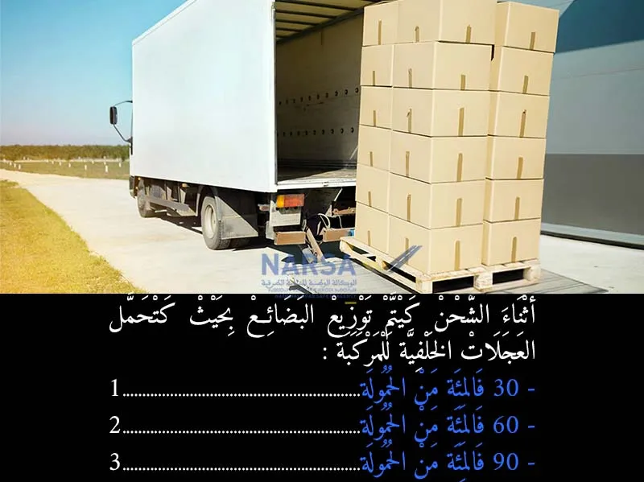
بيّن الجواب
الجواب الصحيح: 3
هذه النسبة (90%) تؤكد على أهمية قصوى لضمان الجر الأمثل والدفع من المحاور الخلفية، خاصة في مركبات النقل الثقيل، مع افتراض أن الـ 10% المتبقية كافية لضمان توجيه فعال من المحور الأمامي.
السؤال 2
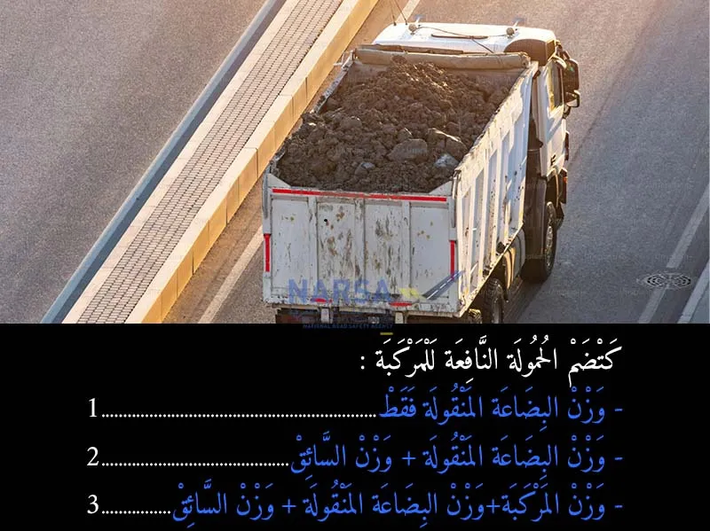
بيّن الجواب
الجواب الصحيح: 2
الحمولة النافعة تُحسب عادةً بالمعادلة التالية:
الحمولة النافعة = الوزن الإجمالي المسموح به للمركبة - الوزن الفارغ للمركبة.
وهذا يعني أن الحمولة النافعة هي عملياً وزن البضاعة التي يمكن للمركبة أن تحملها. وزن السائق والركاب عادةً ما يتم احتسابه ضمن "الوزن الفارغ" أو يُخصم من "الوزن الإجمالي المسموح به" قبل احتساب الحمولة النافعة الصافية للبضائع.
لذا، من بين الخيارات المعروضة، فإن الحمولة النافعة تتضمن بشكل أساسي:
وزن البضاعة المنقولة فقط ✅
الخيارات الأخرى غير دقيقة:
الخيار 2 (وزن البضاعة المنقولة + وزن السائق) ليس التعريف القياسي للحمولة النافعة؛ فوزن السائق عادة لا يعتبر جزءًا من الحمولة النافعة للبضائع.
الخيار 3 (وزن المركبة + وزن البضاعة المنقولة + وزن السائق) يمثل الوزن الإجمالي الحقيقي للمركبة وهي محملة (PTRC أو PTAC)، وليس الحمولة النافعة.
السؤال 3
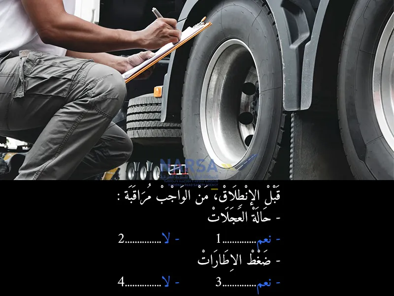
بيّن الجواب
الجواب الصحيح: 1 و 3
فحص الإطارات يشمل جانبين رئيسيين:
حالة العجلات (الإطارات): يجب التأكد من أن الإطارات ليست بها أي أضرار واضحة مثل التشققات الكبيرة، الانتفاخات، أو الأجسام الغريبة المغروزة فيها. كما يجب التأكد من عمق المداس (نقطة التماس مع الطريق) الكافي. 🕵️
ضغط الإطارات: يجب التحقق من أن ضغط الهواء داخل الإطارات هو الضغط الموصى به من قبل الشركة المصنعة للمركبة، والذي يختلف غالبًا حسب الحمولة. الضغط الصحيح يضمن الأداء الأمثل للإطار، السلامة، وكفاءة استهلاك الوقود. ⛽️
إهمال أي من هذين العنصرين يمكن أن يؤدي إلى حوادث خطيرة أو أعطال في الطريق.
لذلك، يجب مراقبة كل من حالة العجلات وضغط الإطارات قبل الانطلاق.
السؤال 4
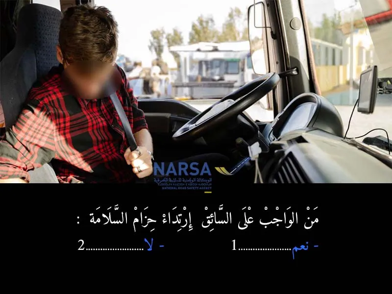
بيّن الجواب
الجواب الصحيح: 1
السائق خاصو ديما يلبس حزام السلامة باش يحمي راسو من الإصابات فحالة وقوع حادث. هادي قاعدة أساسية في قوانين السير فالمغرب وفي بزاف ديال الدول، وكتساعد تقلل من خطورة الإصابات.
السؤال 5
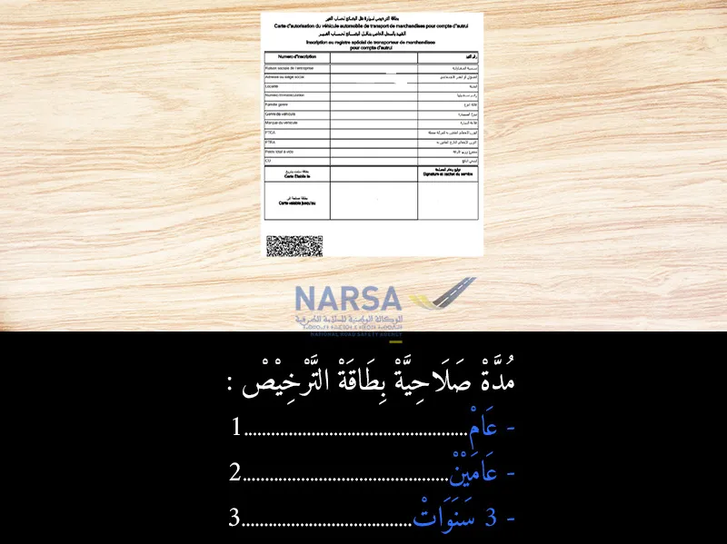
بيّن الجواب
الجواب الصحيح: 2
وفقاً لمدونة السير المغربية والقوانين المنظمة لقطاع النقل الطرقي للبضائع، فإن بطاقة الإذن لنقل البضائع تُمنح لمدة محددة.
المدة القانونية لصلاحية هذه البطاقة هي عامين. يجب تجديدها سنوياً. 🗓️
إذن، الجواب الصحيح هو:
عامين✅
السؤال 6
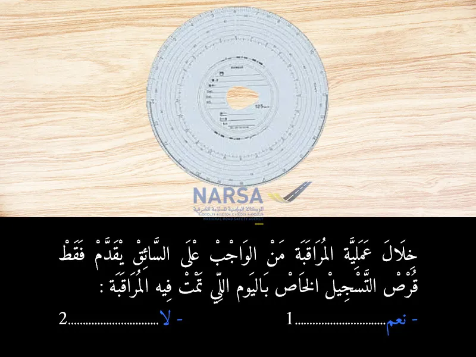
بيّن الجواب
الجواب الصحيح: 2
وفقاً لمدونة السير المغربية واللوائح الدولية المتعلقة بأوقات القيادة والراحة لسائقي المركبات الثقيلة (الشاحنات والحافلات) المجهزة بجهاز التاكوغراف، فإن السائق ملزم بتقديم:
قرص التسجيل الخاص باليوم الحالي: أي اليوم الذي تتم فيه المراقبة. 🗓️
أقراص التسجيل الخاصة بالأيام الـ 28 الماضية: (في بعض الأنظمة كانت 15 يوماً، ولكن التحديثات الأخيرة والمعمول بها دولياً هي 28 يوماً تقويمياً سابقاً). 📅
هذا الإجراء يسمح للمراقبين بالتأكد من التزام السائق بقوانين أوقات القيادة والراحة على مدار فترة زمنية، وليس فقط في يوم المراقبة.
لذلك، إذا كان السؤال يقصد "فقط" اليوم الذي تمت فيه المراقبة، فالإجابة هي "لا".
الجواب الصحيح هو:
2. لا ❌
السؤال 7
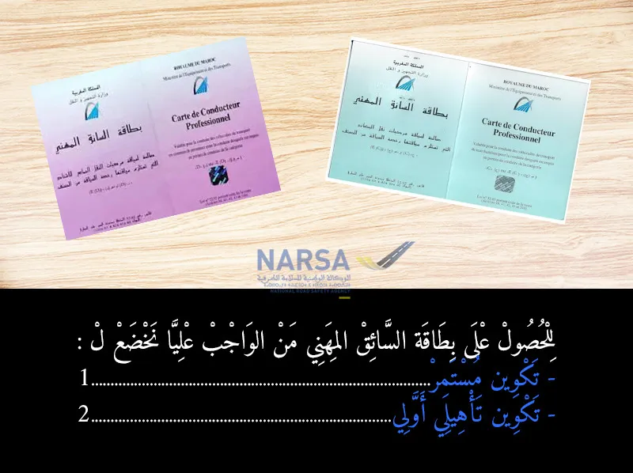
بيّن الجواب
الجواب الصحيح: 2
للحصول على بطاقة السائق المهني في المغرب، يجب على السائق الخضوع لنوع معين من التكوين (التدريب). هذا التكوين يهدف إلى تأهيل السائقين المهنيين لمهنتهم، وضمان معرفتهم بقواعد السلامة، أوقات القيادة والراحة، والمواصفات الفنية للمركبات، وغيرها من الجوانب المتعلقة بالنقل الطرقي.
التكوين المطلوب للحصول على البطاقة لأول مرة هو تكوين تأهيلي أولي. 📚
أما "التكوين المستمر"، فهو تدريب دوري يجب على السائقين المهنيين الخضوع له بعد حصولهم على البطاقة، للحفاظ على صلاحيتها وتجديد معارفهم ومهاراتهم.
لذلك، للحصول على البطاقة في البداية، فإن المتطلب هو:
تكوين تأهيلي أولي ✅
السؤال 8
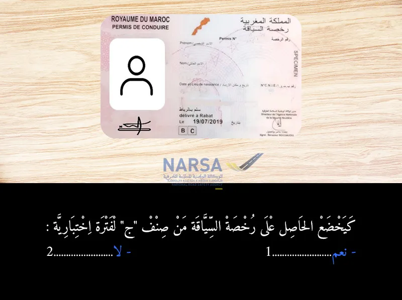
بيّن الجواب
الجواب الصحيح: 2
اللي خدا "ج" فالمغرب، ما كيخضعش لفترة اختبارية جديدة،
حيت راه دازها من قبل فـ "ب"، وممنوع أصلاً يدوز "ج" بلا ما يكون عندو "ب".
السؤال 9
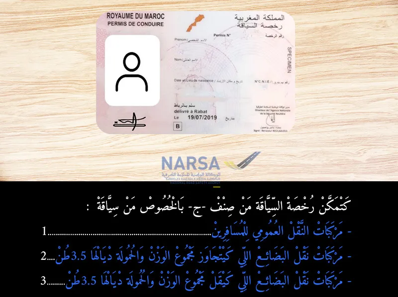
بيّن الجواب
الجواب الصحيح: 2
وفقًا لمدونة السير المغربية وتصنيفات رخص السياقة، فإن رخصة السياقة من صنف "ج" تخول لحاملها سياقة:
مركبات نقل البضائع (الشاحنات). 🚚
يجب أن يتجاوز مجموع وزنها الإجمالي مع الحمولة (Poids Total Autorisé en Charge - PTAC) 3.5 طن (3500 كيلوغرام).
ويمكن أن يُرفق بها مقطورة لا يتجاوز وزنها الإجمالي الأقصى 750 كيلوغراماً.
بناءً على هذا التعريف، الخيار الذي يطابق ما تسمح به رخصة السياقة من صنف "ج" هو:
مركبات نقل البضائع اللي كيتجاوز مجموع الوزن والحمولة ديالها 3.5 طن ✅
السؤال 10
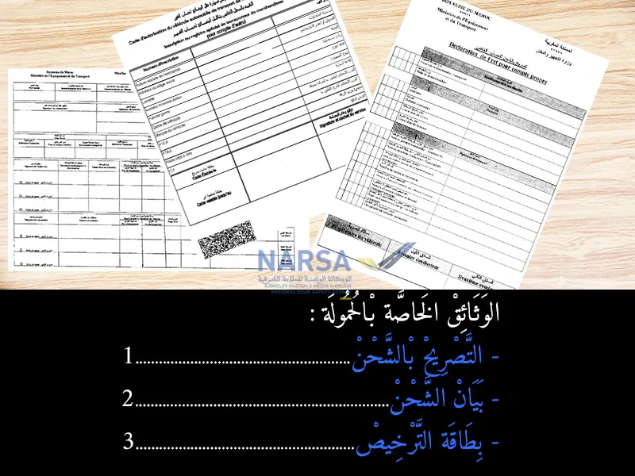
بيّن الجواب
الجواب الصحيح: 1 و 2
عند نقل البضائع، خاصة في النقل التجاري، يتوجب على السائق حمل وثائق معينة تتعلق بالحمولة نفسها، وذلك لضمان قانونية النقل وتحديد طبيعة البضاعة ومصدرها ووجهتها.
من أهم هذه الوثائق:
التصريح بالشحن (Déclaration de chargement أو Lettre de voiture): وثيقة تفصيلية تحتوي على معلومات عن الحمولة (نوعها، وزنها، كميتها)، المرسل، المرسل إليه، ونقطة الانطلاق والوصول. تعتبر ضرورية في النقل التجاري.
بيان الشحن (Bordereau d'expédition): وثيقة تلخص تفاصيل الحمولة التي تم شحنها، وتُستخدم للمتابعة والتأكد من تسليم البضاعة.
أما "بطاقة الترخيص"، فهي وثيقة تتعلق بالمركبة نفسها أو بالنشاط المهني للسائق (مثل بطاقة الإذن لنقل البضائع)، وهي ضرورية للمركبة والسائق بشكل عام، ولكنها ليست خاصة بـ"الحمولة" نفسها في كل رحلة بنفس طريقة التصريح وبيان الشحن.
لذلك، الوثائق الخاصة بالحمولة بشكل مباشر هي التصريح بالشحن وبيان الشحن.
الجواب الصحيح هو:
التصريح بالشحن ✅
بيان الشحن ✅
السؤال 11
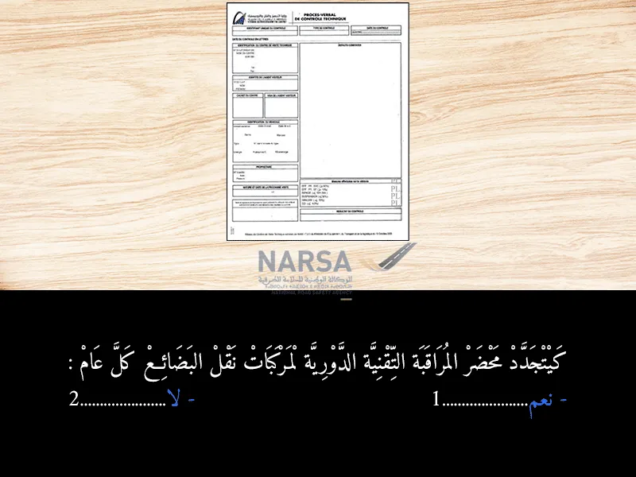
بيّن الجواب
الجواب الصحيح: 1
تخضع مركبات نقل البضائع (الشاحنات والحافلات) للفحص التقني الإجباري سنويًا (كل عام). 📅 الهدف من هذا الفحص هو التأكد من أن المركبة في حالة ميكانيكية جيدة ⚙️ وأنها تستجيب لمتطلبات السلامة الضرورية للسير على الطرق
السؤال 12
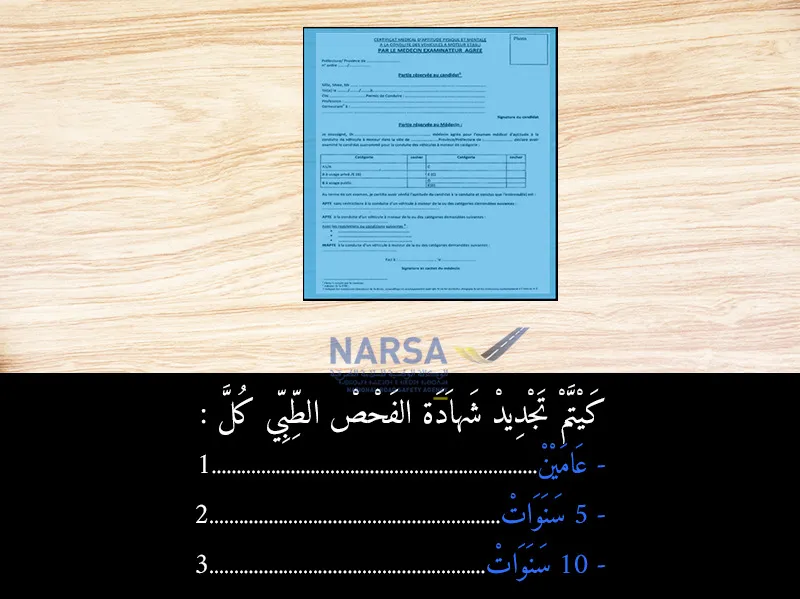
بيّن الجواب
الجواب الصحيح: 1
وفقًا لمدونة السير المغربية، يخضع السائقون المهنيون لفحص طبي دوري للتأكد من أهليتهم البدنية والذهنية للقيادة، وهذا الفحص ضروري لتجديد رخص السياقة من بعض الأصناف (خاصة الأصناف الثقيلة) وللحفاظ على صلاحية بطاقة السائق المهني.
بالنسبة للسائقين المهنيين، تُجدد شهادة الفحص الطبي كل عامين حتى سن الـ 60 عامًا.
بعد سن الـ 60 عامًا، تُجدد شهادة الفحص الطبي كل عام واحد.
بما أن الخيارات المتاحة هي عامين، 5 سنوات، و10 سنوات، وأن "عامين" هي المدة الأساسية للتجديد لمعظم السائقين المهنيين قبل سن الستين، فإن الجواب الصحيح هو:
عامين ✅
السؤال 13
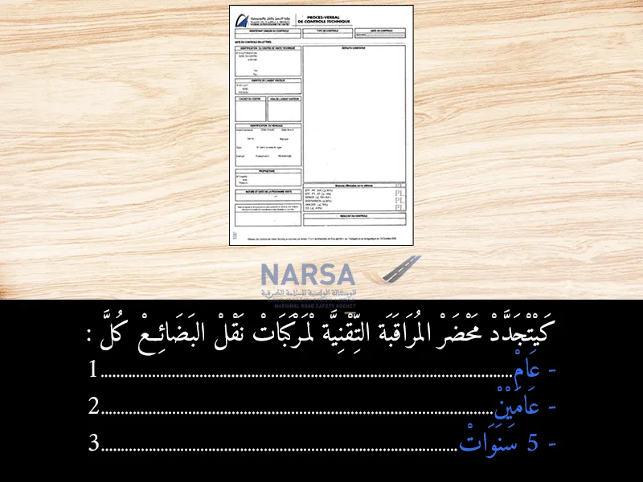
بيّن الجواب
الجواب الصحيح: 1
تخضع جميع المركبات لفحص تقني دوري لضمان سلامتها وصلاحيتها للسير على الطرق. 🛣️ بالنسبة لـمركبات نقل البضائع 🚚 (الشاحنات، سيارات النقل التجاري، إلخ)، فإن الفحص التقني ومحضر المراقبة التقنية الخاص بها يجب أن يجددا كل سنة 🗓️.
هذا الإجراء السنوي يهدف إلى التأكد المستمر من أن هذه المركبات الثقيلة، التي تلعب دورًا مهمًا في نقل السلع، تلتزم بمعايير السلامة والأداء المطلوبة، وذلك لتجنب الحوادث وضمان أمن مستعملي الطريق. 🛠️✅
السؤال 14
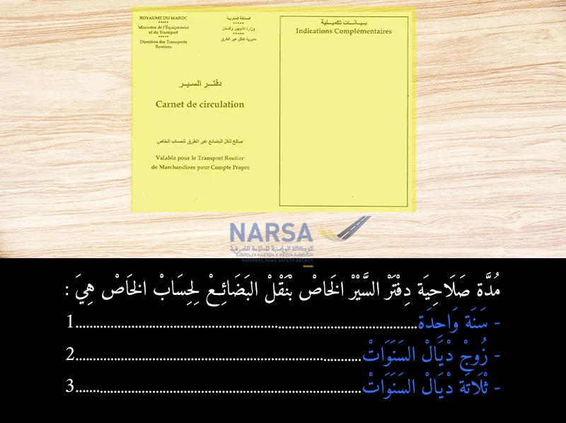
بيّن الجواب
الجواب الصحيح: 1
دفتر السير (Carnet de circulation) المخصص لنقل البضائع على الحساب الخاص (أي للمقاولات التي تنقل بضائعها الخاصة وليست للنقل العمومي) له صلاحية محددة. 🗓️
وفقاً للقوانين المعمول بها في المغرب، يجب تجديد هذا الدفتر كل سنة. 🔄 هذا يعني أنه صالح لمدة عام واحد فقط من تاريخ إصداره أو تجديده. ⏳ الهدف هو ضمان التزام جميع المركبات والأنشطة بالنظام، ومراجعة البيانات بانتظام. 🚛✅
السؤال 15
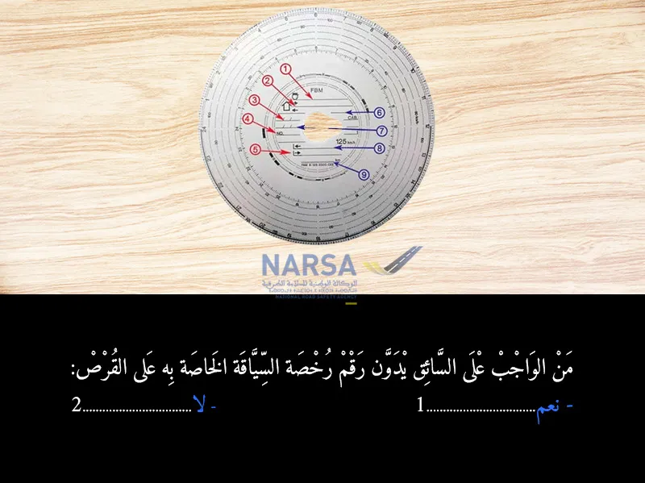
بيّن الجواب
الجواب الصحيح: 2
قرص التاكوغراف 💿 هو وثيقة مهمة كتوثق الأنشطة ديال السائق (السياقة 🛣️، الراحة 😴، العمل الآخر 👷) والسرعة ⚡ والمسافة المقطوعة 📏. هاد القرص فيه بلايص مخصصة لتسجيل معلومات معينة، بحال:
الاسم الكامل للسائق 🧑✈️.
تاريخ بداية العمل وتاريخ النهاية 🗓️.
رقم لوحة ترقيم المركبة (الماتريكول) 🔢.
المسافة المقطوعة 🛣️ (في البداية والنهاية).
و بعض المعلومات الأخرى حسب نوع التاكوغراف.
لكن، مدونة السير المغربية 🇲🇦 ماكتفرضش على السائق أنه يدون "رقم رخصة السياقة" ديالو مباشرة على قرص التاكوغراف 📝. المعلومات الشخصية المطلوبة كتكون محدودة بالأساس بالاسم والتوقيع.
السؤال 16
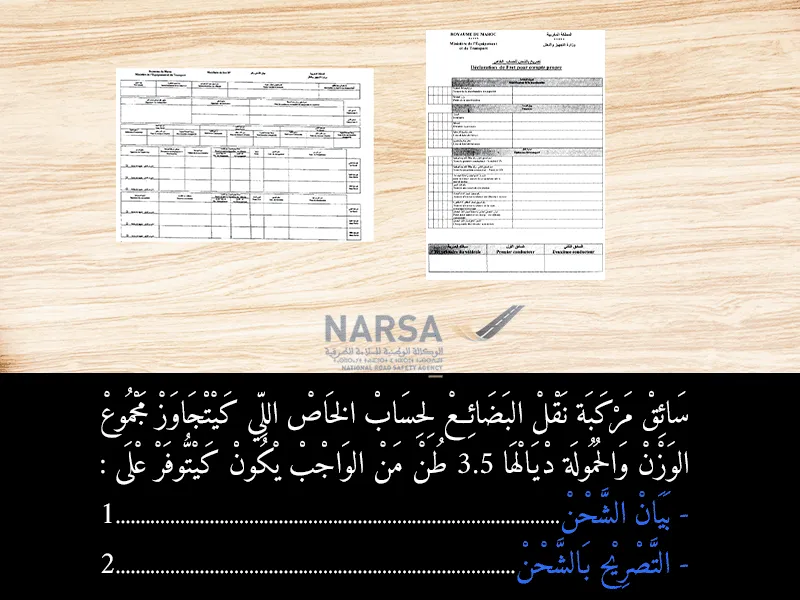
بيّن الجواب
الجواب الصحيح: 2
عند نقل البضائع لحساب الخاص وبتجاوز وزن 3.5 طن، يُعتبر بيان الشحن (ورقة الطريق) الوثيقة الأساسية والإلزامية التي يجب أن يحوزها السائق. هي بمثابة إثبات قانوني لعملية النقل وتفاصيل الحمولة. 🚚📄
السؤال 17
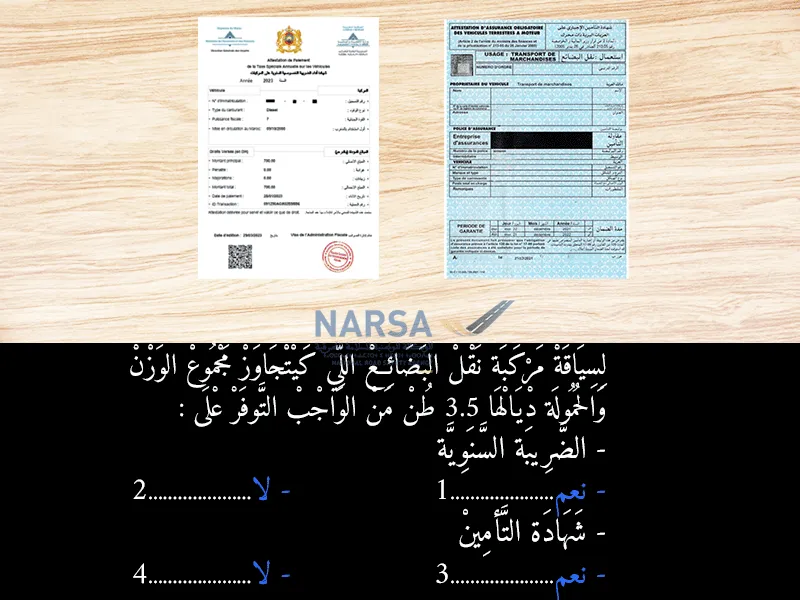
بيّن الجواب
الجواب الصحيح: 1 و 3
لسياقة مركبة نقل البضائع اللي كيتجاوز مجموع الوزن والحمولة ديالها 3.5 طن (يعني الشاحنات المتوسطة والكبيرة)، من الواجب التوفر على:
- الضريبة السنوية: نعم. ✅ (الضريبة السنوية على المركبات، أو "لافينييت" 🏷️،)
- شهادة التأمين: نعم. ✅ (شهادة التأمين على المسؤولية المدنية (assurance responsabilité civile) 📄 هي وثيقة إجبارية وضرورية جدًا،
السؤال 18
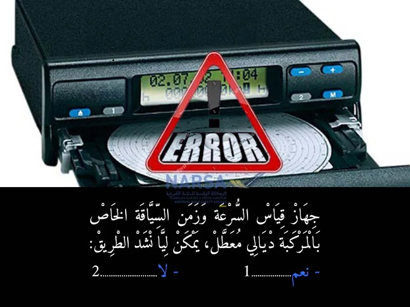
بيّن الجواب
الجواب الصحيح: 2
إلى كان التاكوغراف (جهاز قياس السرعة و وقت السياقة) ديال الشاحنة 🚛 ولا الحافلة 🚌 خاسر، مخاصكش تسوق بيها في الطريق ⛔. التاكوغراف جهاز إجباري للسائقين المهنيين 🧑✈️، كيسجل السرعة ⚡، المسافة المقطوعة 📏، و أوقات السياقة ⏱️ والراحة 😴، وهذا الشي باش كيتأكدوا من احترام القوانين ⚖️ ديال السياقة والراحة باش يتفاداو حوادث السير 💥 اللي كتجي من الإرهاق.
إلى كان معطل، خاصك تصلحو قبل ما تخرج للطريق 🛠️، و إلا غادي تكون عرضة لغرامات مالية كبيرة 💸 و يمكن حتى سحب الرخصة 🚫. تفاداو المشاكل وسوقو بأمان! 🛡️👍
السؤال 19
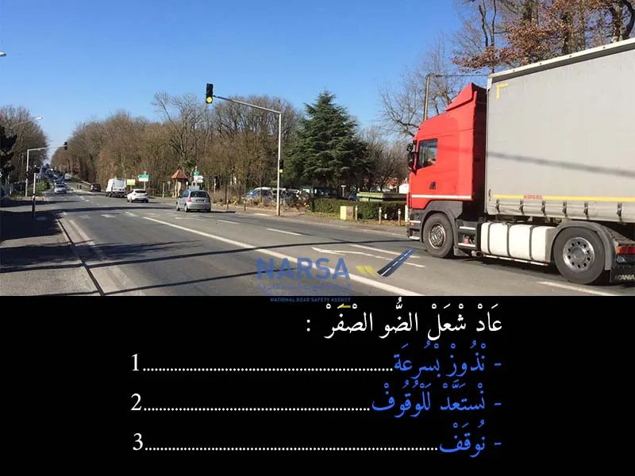
بيّن الجواب
الجواب الصحيح: 3
الإجابة الصحيحة المعتمدة في هذا السياق هي "التوقف" عند اشتعال الضوء الأصفر، فهذا يعني أن القواعد هنا تفسر الضوء الأصفر على أنه إشارة للتوقف الفوري إذا كان ذلك آمنًا، وليس فقط الاستعداد للوقوف.
في بعض الأنظمة، يعتبر الضوء الأصفر بمثابة "تحذير للتوقف" مع إمكانية المرور إذا كان التوقف المفاجئ غير آمن (مثل إذا كانت السيارة قريبة جداً من خط التوقف عند اشتعاله)، ولكن في أنظمة أخرى، يُلزم السائق بالتوقف عند الضوء الأصفر إذا كان ذلك ممكنًا بأمان.
بناءً على تصحيحك، الجواب الصحيح هو:
توقف ✅
السؤال 20
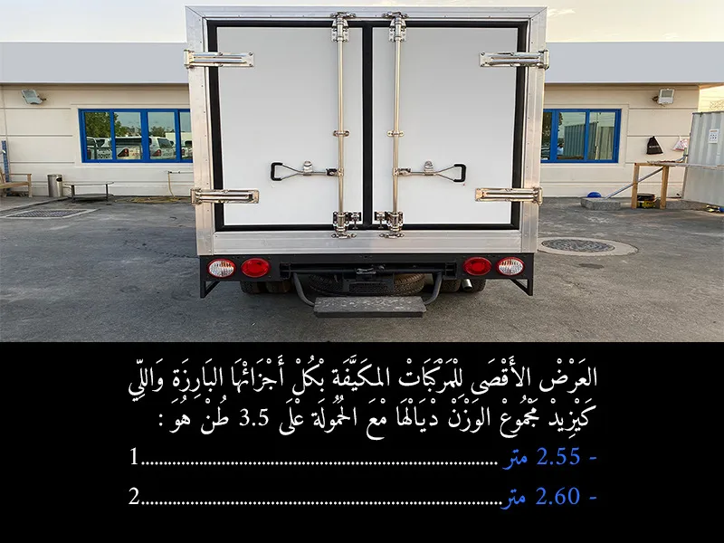
بيّن الجواب
الجواب الصحيح: 2
وفقًا لمدونة السير المغربية واللوائح الدولية المتعلقة بأبعاد المركبات (خاصة اتفاقية ADR المعنية بنقل البضائع الخطرة، والتي تتضمن أحكامًا عن المركبات المبردة)، هناك استثناء في العرض الأقصى لبعض المركبات.
العرض الأقصى العام للمركبات (بما في ذلك الشاحنات العادية): 2.55 متر. 📏
العرض الأقصى للمركبات المبردة (les véhicules à température dirigée أو مكيفة): تُسمح هذه المركبات بعرض أكبر قليلاً لاستيعاب سمك الجدران العازلة. العرض الأقصى المسموح به لها هو 2.60 متر. ❄️
بما أن السؤال يحدد المركبات بأنها "مُكيّفة" ويزيد وزنها عن 3.5 طن، فإن الجواب الصحيح هو العرض المخصص لهذه الفئة.
إذن، الجواب الصحيح هو:
2.60 متر ✅